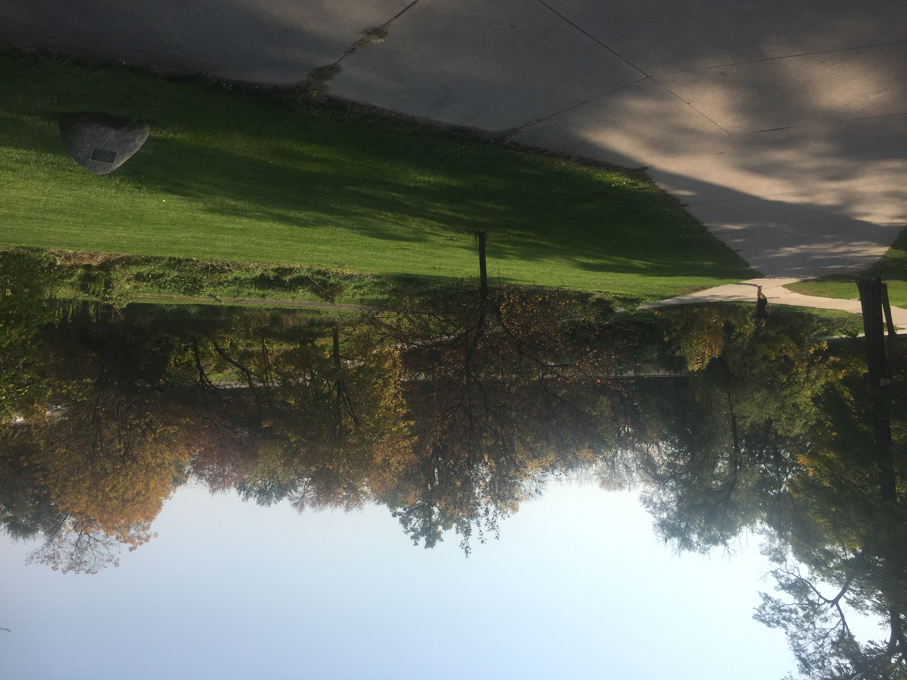
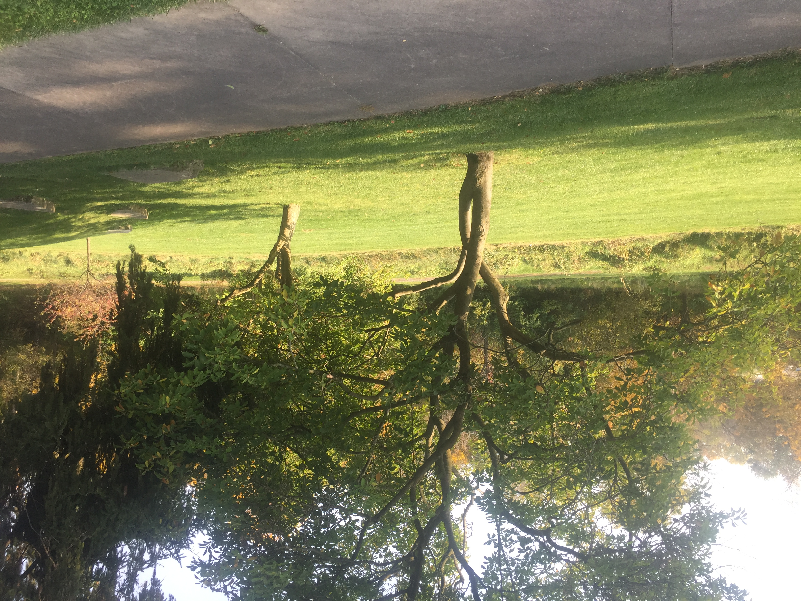
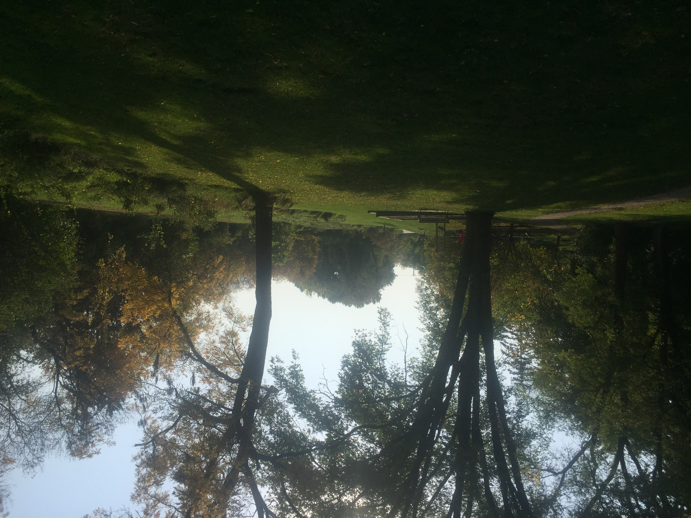
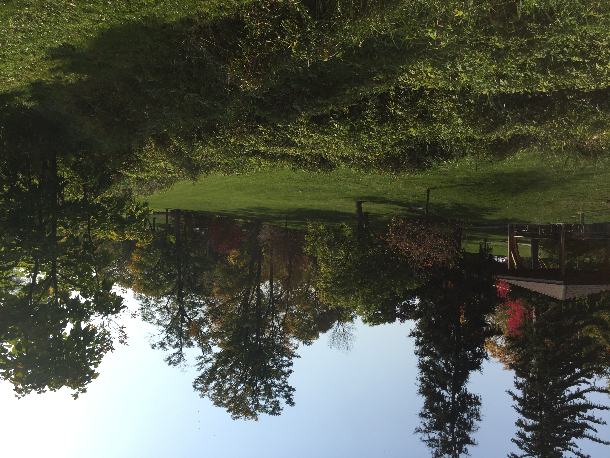
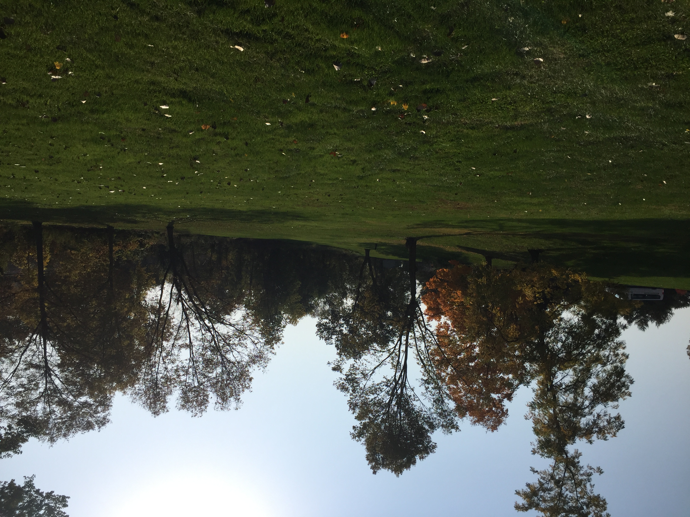
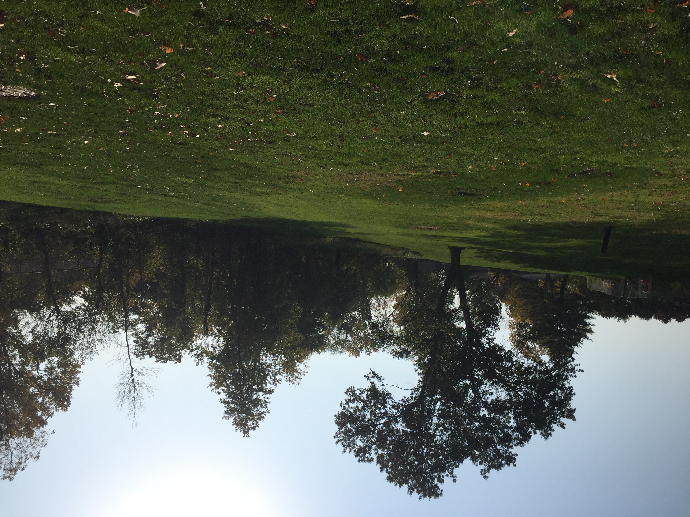
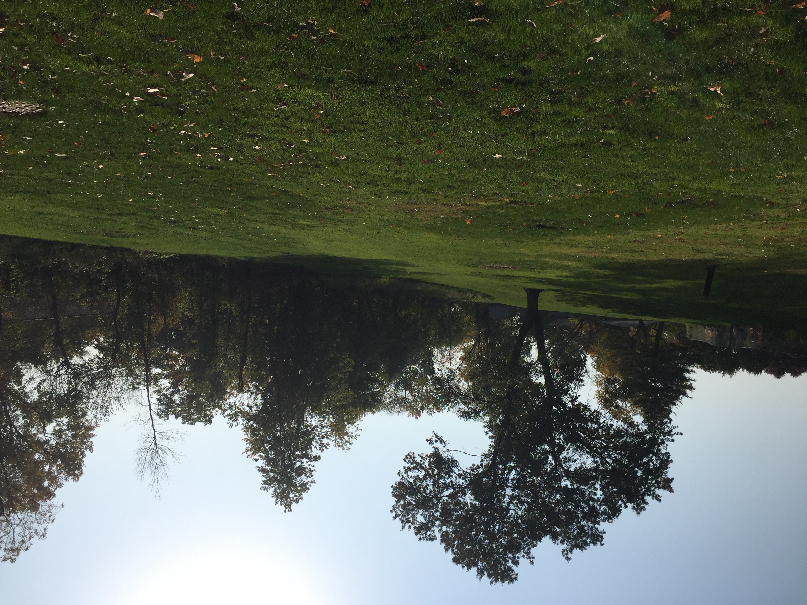

Sample site design
For both these sites I imagine creating a design that uses only part of the area, but we can discuss that
Potential Site 1: Brookland Park
519 Melrose Ct, Iowa City, IA 52246
This is the park nearest my house, it has a little gravel path that runs through it, about .2 miles in circumference. It has an intermittent stream running through it, with river-type grasses all around it. There is a willow on one end, with Magnolia trees and some other trees (soon to be identified). There is a slight hill, with a sitting gazebo and a small playground at the top. My concerns are that the stream running through could make this too unique of a site, and that what I'll learn might be less applicable to a general permaculture site.
   
Potential Site 2: Empty Field with Trees
location here
This site is located between church and train tracks. Stream running along south side near train tracks. Occasional fairly large trees along edges. Hill on one side, facing south. Good light all around. I imagine this site would be more typical, but less interesting.


 
